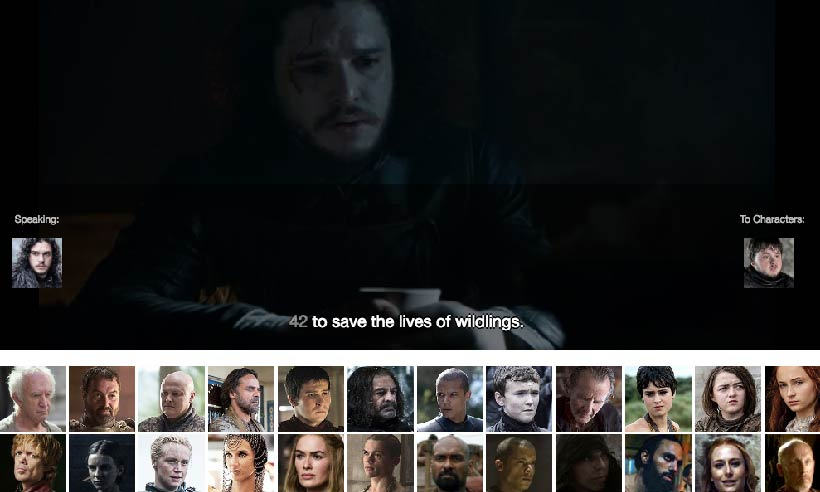
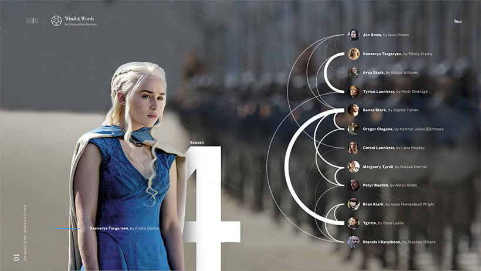
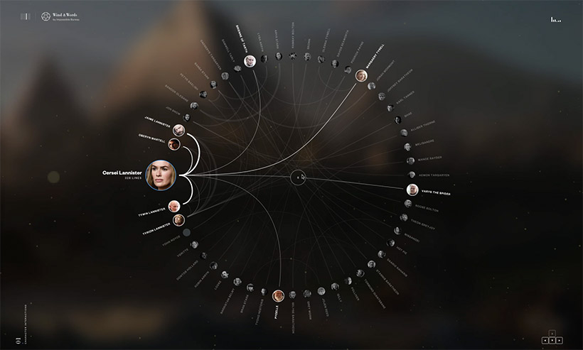
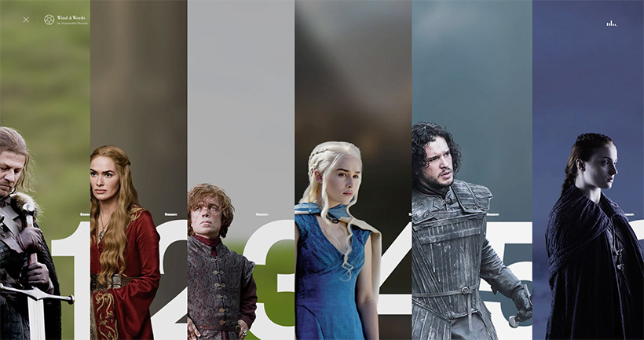
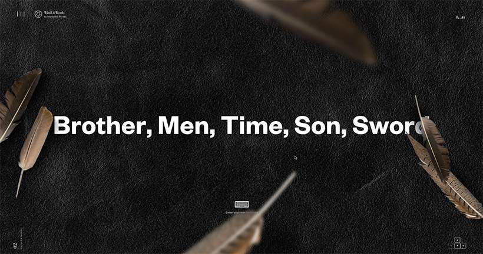

‘Wind and Words’, fully conceived and built by Impossible Bureau, is a data visualization experiment based on a complete dialogue analysis of every episode of HBO’s Game of Thrones. It turns every spoken line from all six seasons of the show into a unique interactive experience that allows visitors to explore the characters and the words they speak, their sentiment, and how they interact with others.
We launched the experiment in October 2016 as a passion project to push our ideas and execution beyond a client brief. The project was a huge undertaking to collect, catalogue, visualize and optimize the data, but we believe the result demonstrates what we’re passionate about, and what we’re capable of, as a small and nimble digital agency.
We’re excited to share the results of this experiment, currently in Beta at beta.wind-and-words.com, as well as all the details of how we made it.
And now it begins.
At Impossible Bureau, we love nothing more than being immersed in huge data sets and thinking about how to design simple, beautiful ways to interact with complex information. We also love Game of Thrones. What better than to apply our passion for data and design to our favorite show?
It hardly needs an introduction, but Game of Thrones is a hugely successful television series produced by HBO and based on the Song of Ice and Fire novels written by George R.R. Martin. When the current season is airing, we get into the office every Monday morning and the first thing we talk about is what happened on Game of Thrones the previous night. While much of the talk is about who died in cruel and unusual ways, or who is going to die next, we’re also fascinated by the timeless and witty dialogue.
We normally think about interactions between a user and an experience, but the rich interactions between people — in both the physical and digital worlds — is something that we’ve long been interested in. These thousands of lines of dialogue spoken over 60 episodes gave us a wealth of interactions to look at. We began with the goal to collect and analyze this data and, once hooked on the idea, we wondered what we could visualize that hasn’t been seen before, could we get any new insights into our favorite characters, and could we push the limits of the browser to craft the transitions to a level you rarely see.
Different roads lead to the same castle.
Our first challenge was to collect the data. Despite the popularity of the show and the unbelievable number of tribute sites, the best Game of Thrones data — every spoken line from all six seasons of the show — isn’t that easy to get.
We created a database of more than 300 characters, who speak or are spoken to, with information we collected from the Game of Thrones Wiki. (This staggering number doesn’t even include the hundreds of extras who appear throughout the seasons.)
To build the dialogue database, we started scraping scripts from online sources, then realized that only a handful of episodes are available online with all the lines attributed to the characters. Also, a standard script didn’t give us everything we wanted — we weren’t just interested in what the characters were saying, but who they they were saying it to. We tried Amazon’s Mechanical Turk for manually assigning the ‘from’ and ‘to’ characters with unattributed script lines, but a short trial proved that doing this for every episode would have taken hundreds of hours, and with a higher margin of error than we liked.
Eventually we created our own tool to record each episode’s dialogue and attribute every spoken line to the character who said it, and to to whom it was said. This tool uses SRT files (the same files that are used for displaying subtitles), synced up to the episode video by timecode. For efficiency it only plays the sections of video with dialogue, and allows a user to simply click on the characters from the database to attribute the lines. The tool also has inbuilt error checking for any lines that are missing characters, or can be disregarded (for example, a knight giving commands to his horse off-screen). This allowed us to manually create all the data we needed, at a fraction of the time and with a lower margin of error.

Beauty can be treacherous.
We began the visual concepts while we collected and analyzed the data. It’s not too hard to make a Game of Thrones themed site look dramatic, so we quickly had a beautiful UI for the experiment. But as we started working with the real data, it didn’t always reveal what we expected it to, so we needed to continuously evaluate the strength of the visualizations and iterate on the site. Today, beta.wind-and-words.com looks and feels quite different from our initial UI concepts, and it may evolve even further through Beta.
The data comes first with any visualization, but especially with the Game of Thrones scripts. We used a variety of open-source libraries to analyze the dialogue, including word analysis and sentiment, and the most interesting trends weren’t revealed until we had a full data set across the seasons. When we began integrating the data, some elements of our design that looked striking with sample data became instantly boring with the real data, so it was a constant process of tweaking and re-thinking to arrive at a UI that was both usable and compelling.
In thinking about the characters in Game of Thrones, one of your first thoughts might be of the vast number of them who’ve died over the seasons. We included deaths in our original concepts and became distracted by them for weeks, collecting all the data from different sources, trying out different ideas to correlate it with the script data and visualizing it in a way that hadn’t been done before. “Death by House”, “Sentiment of Death” and “Last Words” were all ideas we tried but rejected. Not only have the Game of Thrones deaths been visualized in many different forms already, it just didn’t fit with our experiment. When we stopped trying to make deaths fit where they didn’t belong, we turned to some data analysis tools that gave us much more relevant and interesting insights. We hooked into some libraries to find out some interesting statistics, such as the average number of profane words used per episode, and who uses the most complex words (based on an average score in Scrabble).
We couldn’t push the data to fit in with all our original designs and concepts, nor could we rely solely on our developers’ instincts for how the data should be displayed. The success of the interface and the data visualizations is due to the joint and equal efforts between development, data analysis and design, and the result is a collection of visualizations that are solely based on the script data, and the only Game of Thrones tribute site to do so.


A sweet face oft hides a sinner’s heart.
There’s a lot going on underneath the interface, and our Meteor back-end was also consistently improved throughout the project — running data analysis on hundreds of thousands of words takes some significant optimizing.
Wind and Words is built completely in canvas to allow us to render complex effects with optimal performance. The menu, transitions and visualizations have all been painstakingly optimized to run as smoothly as any site we’ve seen, and reliably on devices without the highest specs or bandwidth. We even dusted off some college mathematics to perfect the menu — one would never guess that it uses a probability density function.

Snow and smoke and pine needles.
The more visible aspect of our developers’ work is in the motion of the transitions and interactions. It was important to us that we spent time to perfect all the details, things that are too often sacrificed for time or budget, but contribute greatly to the overall experience.
From the loading ball drop on the landing page, to the movement of the smoke and animation of the natural elements, every action was labored over to represent accurate physics and a consistent atmosphere.
The compelling representation of the script data was our first goal, but we believe this layer of craftsmanship transforms Wind and Words from a collection of interactive infographics to an experience that can be appreciated by data lovers and Game of Thrones fans alike.
